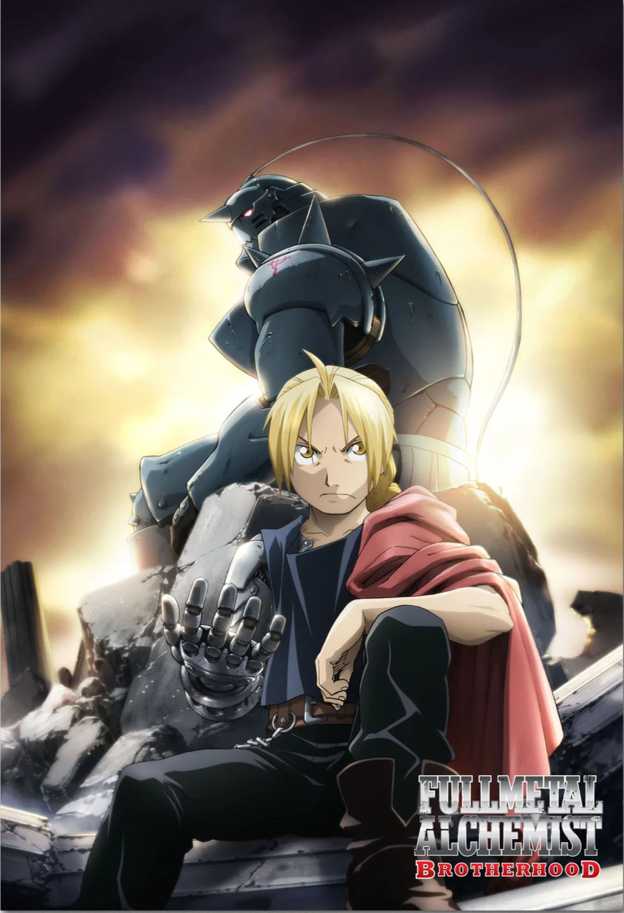

Full Metal Alchemist: Brotherhood

If you want an anime that will make you think, laugh, cry, and cheer all at once, Fullmetal Alchemist:Brotherhood is absolutely the anime for you.
Plot:
Fullmetal Alchemist: Brotherhood is an anime about two brothers, Edward and Alphonse Elric, who live in a world where alchemy -the science of transforming matter- obeys one strict rule: "To obtain, something of equal value must be lost." After a tragic event where they try to use alchemy to bring back their dead mother back to life, Edward loses a leg while Alphonse loses his entire body. In an attempt to bring his brother back, Edward sacrifices his arm to bind the soul of Alphonse to a suit of armor. Determined to get what they had lost, Edward becomes a State Alchemist at the age of fifteen in order to go on a journey to find the legendary object called the Philosopher's Stone - a powerful object said to bypass alchemy's laws.
Themes and Genre:
At its core, Fullmetal Alchemist: Brotherhood is a story of fantasy, adventure, and philosophical drama. It explores the themes of sacrifice, morality, loss, and redemption. The concept of "Equivalent Exchange " becomes a metaphor for nothing comes without a sacrifice. The anime also questions: what defines a person's soul? How many lines can you cross in the name of the pursuit of knowledge or power till you cross a line you can't uncross?
This is also a story of grief, forgiveness and the strength of one's own human desires. This anime is packed with awesome battles and a cool magic system in the alchemy system. But the biggest strength of this anime is its story telling and world building. From every side character you meet to every political conflict, this world being built up feels genuine and full of life. This contributes to the overall story and emotional weight of the series.
Why You Should Most Definitely Watch It:
Without any personal bias, Fullmetal Alchemist Brotherhood is objectively one of the best anime ever made. The pacing is perfect, the animation is phenomenal, and the soundtrack will be one you will remember long after your first watch through of the show. The characters are unforgettable. Edward is one of the best anime protagonists that exude determination. Alphonse kindness, and even the villains make every single storybeat hit harder because of the way theories were written.
Moreover, this is an anime that tells the story it wants to tell and doesn't overstay its welcome. At 64 episodes, it tells a compelling story with a powerful message and ending that ties up all loose ends together beautifully.
Final Thoughts:
Fullmetal Alchemist:Brotherhood is more than just a great anime - it is a masterpiece of storytelling. Words like "thrilling," "thought provoking," and "emotional" come to mind. Whether you're a longtime anime fan or you're new to anime all around, this is one of the best shows you could start with. It offers a timeless story about the cost of one's ambition, the power of brotherhood, and the value of being a human.
Filed under Anime